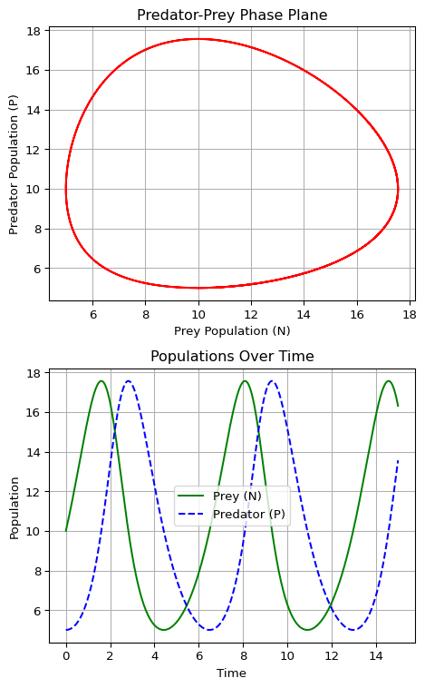
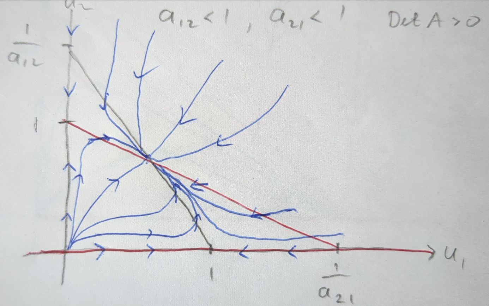
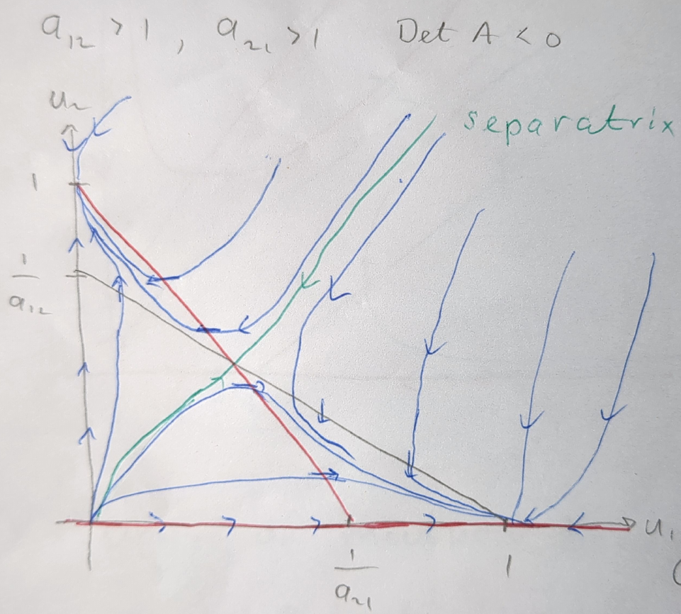
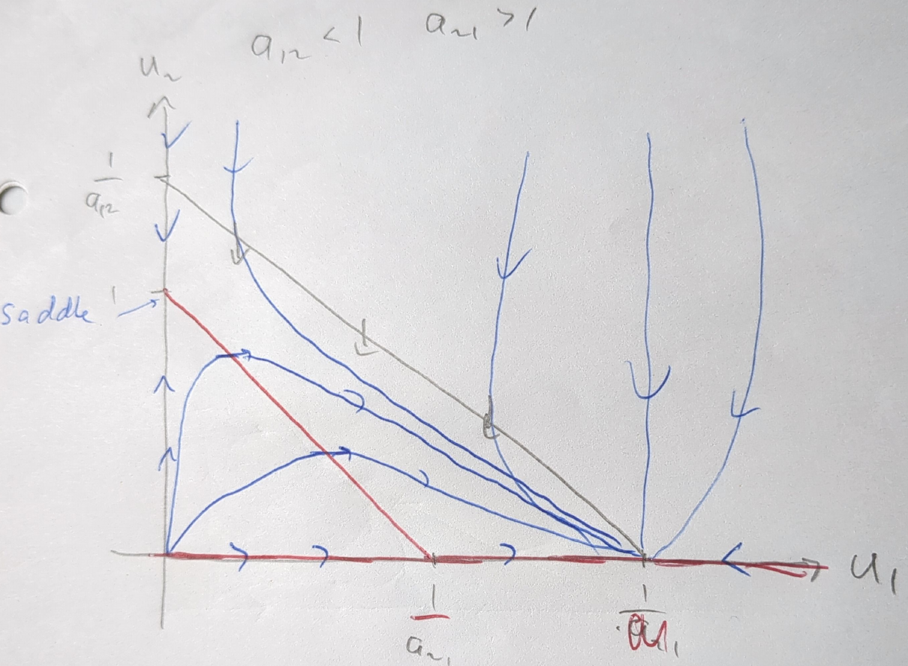
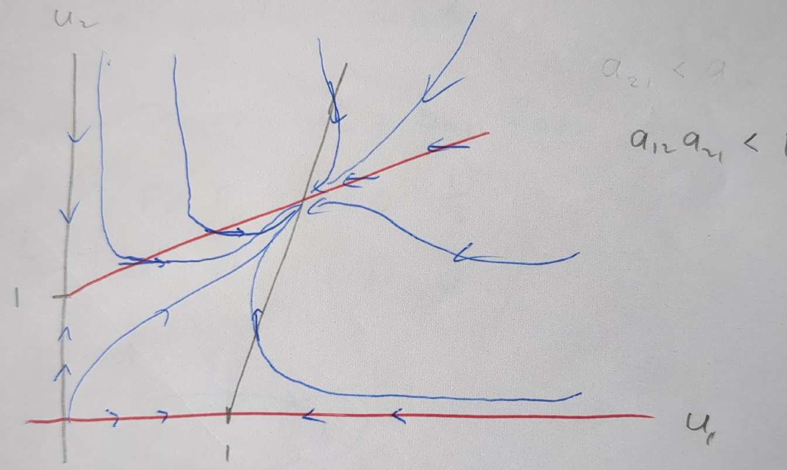

3 Interacting populations
Ecological systems are complex networks of interactions involving multiple species, which can be categorized into different trophic levels based on their roles in the ecosystem. Understanding these interactions is crucial for studying ecosystem dynamics, population control, and biodiversity. While the study of multiple interacting species can become quite intricate, analysing the interactions between two species offers a more manageable framework while still providing significant insights into the dynamics of ecological relationships. This chapter focuses on two-species interactions, offering a foundational understanding that can be applied or extended to more complex scenarios.
Mathematical Framework for Two-Species Interactions
To model the interactions between two species, we employ a system of two autonomous coupled ordinary differential equations (ODEs). These equations describe the rate of change of the population sizes over time, capturing the essence of their interaction. The general form of these equations is given by: \[ \frac{dX}{dt} = f(X,Y), ~~~~~ \frac{dY}{dt} = g(X,Y). \tag{3.1}\] where \(X\) and \(Y\) represent the population sizes of the two species, and \(f(X,Y)\) and \(g(X,Y)\) are functions that describe how the populations influence each other. These functions are crafted based on the nature of the interaction between the species, reflecting the underlying biological processes.
Types of Two-Species Interactions
The dynamics of two interacting species are generally categorized into three primary types, each with its unique characteristics and implications for the populations involved:
Predator-Prey Interactions: In this type of interaction, one species (the predator) feeds on the other (the prey). The population growth of the predator increases with increased availability of the prey, while the prey population is negatively affected by the presence of the predator. Mathematically, this interaction often leads to oscillatory dynamics, exemplified by the classic Lotka-Volterra model.
Competition: When two species compete for the same resources, their growth rates are adversely affected by their interaction. This situation is characterized by negative impacts on both species’ growth rates, potentially leading to the exclusion of one species or to a stable coexistence, depending on the specific conditions and competition coefficients.
Mutualism: This positive interaction benefits both species, leading to an increase in their growth rates. The mutualistic relationship is such that each species provides some benefit to the other, which could be in the form of nutrients, shelter, or any other factor that enhances growth or survival.
While this chapter focuses on these primary interaction types, it’s important to recognize the spectrum of interactions in nature, including parasitism, amensalism, and others. Moreover, the real-world ecological systems often exhibit a mix of these interactions, adding layers of complexity. By starting with the analysis of two-species systems, we lay the groundwork for understanding more intricate interactions and the overall dynamics of ecosystems.
3.1 Lotka-Volterra Model
The Lotka-Volterra model, developed independently by Alfred Lotka in 1925 and Vito Volterra in 1926, serves as a foundational mathematical model for understanding the dynamic interplay between a prey population (denoted by \(N\)) and a predator population (denoted by \(P\)).
Model Formulation
The model assumes that the prey population, in the absence of predators, grows exponentially with a per capita growth rate \(a > 0\). However, the prey die due to being eaten by predators, and we assume that the per-capita mortality rate grows in proportion to the abundance of predators, with some proportionality constant \(b \geq 0\). This leads to the equation \[ \frac{dN}{dt} = N(a - bP). \tag{3.2}\]
Conversely, the predators benefit from the abundance of prey and we encode that by giving them a per-capita growth \(cN\), where \(c \geq 0\). We assume that the per capita mortality rate is a constant \(d\). This yields the following equation for the predator dynamics: \[ \frac{dP}{dt} = P(cN - d). \tag{3.3}\]
The two plots in Figure 3.1 generated from the Lotka-Volterra model provide a visual representation of the dynamics between a predator and prey population over time. The phase plane plot illustrates the cyclic nature of the interaction between the prey (N) and predator (P) populations, depicting a closed trajectory that indicates the continuous oscillation of both populations in relation to each other: as the prey population increases, it provides more food for the predators, which then also increase in number. However, as the predator population grows, it puts more pressure on the prey, leading to a decline in the prey population, which eventually causes the predator population to decrease due to lack of food.
The plot at the bottom shows the prey and predator populations over time. It highlights the periodic rises and falls of each population, showing how the increase in the prey population precedes the increase in the predator population, followed by a subsequent decline in the prey and then the predator population. The time series plot complements the phase plane by showing how the dynamics unfold over time.
Non-dimensionalization of the Model
Non-dimensionalization is a crucial step to reduce the complexity of the model by decreasing the number of parameters, thereby simplifying the analysis. By introducing the non-dimensional variables \(u = \frac{cN}{d}\), \(v = \frac{bP}{a}\), and the non-dimensional time \(\tau = at\), along with the parameter \(\alpha = \frac{d}{a}\), we can transform the Lotka-Volterra equations into a more tractable form:
\[ \frac{du}{d\tau} = u(1 - v), \quad \frac{dv}{d\tau} = \alpha v(u - 1). \tag{3.4}\]
Phase plane paths
To determine the phase plane paths we consider \(v\) as a function of \(u\) which satisfies the equation \[ \frac{dv}{du} = \frac{\frac{dv}{d\tau}}{\frac{du}{d\tau}} = \frac{\alpha v(u - 1)}{u(1 - v)}. \tag{3.5}\] We rewrite this by separating the variable and integrate: \[ \int\frac{1-v}{v}dv = \alpha \int\frac{u-1}{u}du. \tag{3.6}\] This gives \[ \log v - v - \alpha (u - \log u) = \text{constant}. \tag{3.7}\] So even though \(u\) and \(v\) are changing with time, this particular combination stays constant. This is a conserved quantity. Let us suggestively call the constant of the motion \(H\) for Hamiltonian and write it in terms of new variables \(p = \log u\) and \(q = \log v\): \[ H(q,p)= v- \log v + \alpha (u - \log u) = e^q - q + \alpha(e^p - p). \tag{3.8}\] Hamilton’s equations \[\dot{q} = \frac{dH}{dp},~~~~\dot{p} = -\frac{dH}{dq} \tag{3.9}\] then reproduce our equations of motion.
This formulation underscores the conservative nature of the model, where the energy-like quantity \(H\) is conserved, leading to neutrally stable periodic orbits. This Hamiltonian nature is a rather special feature of the Lotka-Volterra model. Any slight modification of the model will destroy the conserved quantity and the periodic orbits. Thus we should not expect to see such perfect periodic predator-prey cycles in nature. We will discuss more realistic predator-prey models later.
3.2 Linear Stability Analysis
Before we study more realistic models, we revisit the concept of linear stability analysis, an essential tool in understanding the dynamics near the fixed points of systems described by autonomous coupled ordinary differential equations (ODEs) of the form
\[ \frac{dX}{dt} = f(X,Y), \quad \frac{dY}{dt} = g(X,Y). \tag{3.10}\]
Let us denote the fixed points (stable states) of the system as \((x^*, y^*)\). They satisfy \(f(x^*, y^*) = 0\) and \(g(x^*, y^*) = 0\).
Linearisation around the Fixed Points
To analyse the stability of these fixed points, we introduce small perturbations \(x\) and \(y\) around them, setting \(X = x^* + x\) and \(Y = y^* + y\). By applying a Taylor expansion and retaining only the linear terms, we obtain a linearised system:
\[ \frac{d}{dt}\begin{pmatrix} x \\ y \end{pmatrix} = \mathbf{A}(x^*, y^*) \begin{pmatrix} x \\ y \end{pmatrix}, \tag{3.11}\] where the Jacobian matrix \(\mathbf{A}\) is defined as: \[ \mathbf{A} = \begin{pmatrix} f_X & f_Y \\ g_X & g_Y \end{pmatrix}_{(x^*, y^*)}. \tag{3.12}\]
Eigenvalue Analysis for Stability
The solution to the linearised system takes the form \((x, y) = \mathbf{v} e^{\lambda t}\), where \(\mathbf{v}\) is an eigenvector of \(\mathbf{A}\), and \(\lambda\) is the corresponding eigenvalue. By setting the determinant of \(\mathbf{A} - \lambda \mathbf{I}\) to zero, we obtain the characteristic equation:
\[ \det(\mathbf{A} - \lambda \mathbf{I}) = \begin{vmatrix} f_X - \lambda & f_Y \\ g_X & g_Y - \lambda \end{vmatrix}_{(x^*, y^*)} = 0, \tag{3.13}\] which leads to the eigenvalues: \[ \lambda = \frac{\text{Tr} \mathbf{A} \pm \sqrt{(\text{Tr} \mathbf{A})^2 - 4\det \mathbf{A}}}{2}. \tag{3.14}\]
The stability of the fixed point is determined by the sign of the real parts of the eigenvalues:
- If both eigenvalues have negative real parts, the fixed point is stable (attracting).
- If both eigenvalues have positive real parts, the fixed point is unstable (repelling).
- If the eigenvalues have real parts of opposite signs, the fixed point is a saddle point, which is unstable.
- For a complex conjugate pair of eigenvalues, if the real part is positive, the system exhibits an unstable spiral; if the real part is negative, the system exhibits a stable spiral.
This analysis is pivotal for understanding how small deviations from equilibrium evolve over time, providing insights into the system’s long-term behaviour near the fixed points. For instance, in the context of the predator-prey dynamics, such analysis helps elucidate under what conditions the populations will return to equilibrium after a disturbance or potentially diverge away from it.
We can reformulate the stability conditions of a fixed point in terms of the determinant and trace of the Jacobian matrix. We need to recall how these two characteristics of the Jacobian relate to the eigenvalues. For a 2x2 matrix \(A\) with eigenvalues \(\lambda_1\) and \(\lambda_2\), the trace \(\text{Tr}(A)\) is the sum of the eigenvalues, and the determinant \(\text{Det}(A)\) is the product of the eigenvalues:
- \(\text{Tr}(A) = \lambda_1 + \lambda_2\)
- \(\text{Det}(A) = \lambda_1 \lambda_2\)
Using these relationships, we can express the conditions for the stability of fixed points as follows:
Stable (Attracting) Fixed Point: If both eigenvalues have negative real parts, their sum (the trace) is negative, and their product (the determinant) is positive because the product of two negative numbers is positive. Therefore, for stability, \(\text{Tr}(A) < 0\) and \(\text{Det}(A) > 0\). Additionally, to ensure that both eigenvalues are real and negative, we require that \(\text{Tr}(A)^2 - 4\text{Det}(A) \geq 0\) to avoid complex eigenvalues.
Unstable (Repelling) Fixed Point: If both eigenvalues have positive real parts, the trace is positive, and the determinant is positive (the product of two positive numbers is positive). Thus, for instability, \(\text{Tr}(A) > 0\) and \(\text{Det}(A) > 0\).
Saddle Point (Unstable): If the eigenvalues have real parts of opposite signs, the determinant (the product of the eigenvalues) is negative. So, for a saddle point, \(\text{Det}(A) < 0\), regardless of the trace.
Spiral Points: For a complex conjugate pair of eigenvalues, the determinant will be positive (since the product of complex conjugates is positive), but the stability depends on the sign of the real part of the eigenvalues, which is represented by the trace. Here, we also need to ensure that \(\text{Tr}(A)^2 - 4\text{Det}(A) < 0\) to confirm that the eigenvalues are complex.
- Unstable Spiral: If the real part is positive, \(\text{Tr}(A) > 0\) and \(\text{Det}(A) > 0\).
- Stable Spiral: If the real part is negative, \(\text{Tr}(A) < 0\) and \(\text{Det}(A) > 0\).
These conditions provide a concise way to determine the stability of fixed points using only the determinant and trace of the Jacobian matrix, without explicitly computing the eigenvalues.
Example 3.1 (Linear Stability Analysis of the Lotka-Volterra Model) To explore the stability of steady states in the Lotka-Volterra model, we analyse the system near its fixed points using the Jacobian matrix \(\mathbf{A}\). For the non-dimensionalized Lotka-Volterra system, the Jacobian matrix is given by \[ \mathbf{A} = \begin{pmatrix} 1 - v & -u \\ \alpha v & \alpha (u - 1) \end{pmatrix}. \tag{3.15}\]
Steady State at \((u, v) = (0, 0)\)
For the fixed point \((u, v) = (0, 0)\), we substitute these values into the Jacobian matrix and find the eigenvalues:
\[ \mathbf{A} = \begin{pmatrix} 1 & 0 \\ 0 & -\alpha \end{pmatrix}. \tag{3.16}\]
The eigenvalues are \(\lambda_1 = 1\) and \(\lambda_2 = -\alpha\), indicating that this fixed point is a saddle point due to the eigenvalues having opposite signs. This configuration is inherently unstable as trajectories near the point will diverge away along the direction associated with the positive eigenvalue.
Steady State at \((u, v) = (1, 1)\)
At the fixed point \((u, v) = (1, 1)\), the Jacobian matrix becomes:
\[ \mathbf{A} = \begin{pmatrix} 0 & -1 \\ \alpha & 0 \end{pmatrix}. \tag{3.17}\]
The characteristic equation for the eigenvalues \(\lambda\) is \(\lambda^2 + \alpha = 0\), leading to complex eigenvalues \(\lambda = \pm i\sqrt{\alpha}\). The real part of these eigenvalues is zero, indicating that this fixed point is a centre. Trajectories around this point are closed loops, implying that the system exhibits neutrally stable periodic behaviour around the \((1, 1)\) steady state.
The period \(T\) of the oscillations can be determined from the imaginary part of the eigenvalues, which is \(\sqrt{\alpha}\), so the period \(T = \frac{2\pi}{\sqrt{\alpha}}\).
3.3 More Realistic Predator-Prey Models
While the basic Lotka-Volterra model provides a fundamental understanding of predator-prey interactions, more nuanced models incorporate additional biological realism. These models may account for factors like limited resources, satiation, prey switching, predator avoidance, and many others.
3.3.1 Generalized Predator-Prey Model
The generalized model introduces a function \(F(N, P)\) representing the prey population’s per-capita growth and a function \(G(N, P)\) for the predator’s per-capita growth rate, so that the dynamics are:
\[ \frac{dN}{dt} = NF(N, P), \quad \frac{dP}{dt} = PG(N, P). \tag{3.18}\]
The prey might exhibit logistic growth in the absence of predators. To model this we could choose \[ F(N, P) = r\left(1 - \frac{N}{K}\right) - R(N)P, \tag{3.19}\]
where \(r\) is the intrinsic growth rate, \(K\) is the carrying capacity, and \(R(N)\) models how the predation rate of a predator changes with the prey population size. \(NR(N)\) is the rate at which each individual predator consumes prey. The dependence of this rate on the prey population size \(N\) is often referred to as “functional response” in the ecological literature. Holling introduced three types of functional responses, which are widely used in predator-prey models:
Holling Type functional responses
Type I \(NR(N) = bN\), which corresponds to the standard Lotka-Volterra model. This simplification lacks realism as it assumes an unlimited predator appetite regardless of prey population size.
Type II \(NR(N) = \frac{AN}{N + B}\), with \(A\) and \(B\) being positive constants. In this model, the rate approaches a saturation level \(A\) for large \(N\), reflecting a limit to the predator’s consumption rate. This model is more realistic as it accounts for the predator’s limited appetite, which might be because there is a minimum handling time, the time the predator needs to consume a prey item.
Type III \(NR(N) = \frac{AN^2}{N^2 + B^2}\). This response includes a saturation effect like the previous example but also models that if the prey is rare the predator may not be able to find it. This model is more complex and captures the idea that predators may switch to alternative prey when the primary prey is scarce. It may also encode a learning effect, where the predator’s efficiency in capturing prey increases with experience so that initially the predator’s consumption rate increases with prey density.
3.3.2 Example
Consider a model where the prey growth rate follows logistic dynamics in the absence of prey and predation mortality is described by a Holling type II function encoding satiation effects. The predator’s growth rate goes down as the prey population decreases. The model equations are: \[ \frac{dN}{dt} = N\left[r\left(1 - \frac{N}{K}\right) - \frac{A}{N + B}P\right], \quad \frac{dP}{dt} = Ps\left(1 - \frac{hP}{N}\right), \tag{3.20}\] where \(r\), \(K\), \(A\), \(B\), \(s\), and \(h\) are positive constants.
Nondimensionalization
To reduce the complexity, we nondimensionalize the system with \(\tau = tr\), \(u = \frac{N}{K}\), \(v = \frac{hP}{K}\), \(a = \frac{A}{hr}\), \(b = \frac{B}{K}\), and \(c = \frac{s}{r}\), leading to:
\[ \frac{du}{d\tau} = u(1 - u) - a\frac{uv}{u + b}, \quad \frac{dv}{d\tau} = cv\left(1 - \frac{v}{u}\right). \tag{3.21}\]
Stability Analysis of Steady States
The steady states \((u^*, v^*)\) include \((1, 0)\) and a coexistence steady state \((u^*_+, u^*_+)\), where \[ u^*_+ = \frac{1-a-b+\sqrt{(1-a-b)^2+4b}}{2}. \tag{3.22}\] The community matrix \(\mathbf{A}(u, v)\) at these points helps determine their stability. For the fixed point \((1, 0)\), where the prey population is at carrying capacity and there are no predators, we have find \[ \mathbf{A}(1, 0) = \begin{pmatrix} -1 & -\frac{a}{1 + b} \\ 0 & c \end{pmatrix}. \tag{3.23}\] The eigenvalues \(-1\) and \(c\) have opposite sign, indicating that the fixed point is a saddle point.
At the coexistence fixed point \((u^*_+, u^*_+)\) the Jacobian is more complex and we will skip the analysis here.
3.4 Competition Models
In ecological systems, species often compete for limited resources, such as food or territory. This competition influences their growth rates and can determine their survival and dominance within an ecosystem. The Lotka-Volterra competition model provides a framework to study these dynamics, extending the principles of logistic growth to account for interspecies interactions.
3.4.1 Lotka-Volterra Competition Dynamics
The model is formulated as follows for two competing species \(N_1\) and \(N_2\):
\[ \begin{split} \frac{dN_1}{dt} &= r_1N_1 \left(1 - \frac{N_1 + b_{12}N_2}{K_1}\right),\\ \frac{dN_2}{dt} &= r_2N_2 \left(1 - \frac{N_2 + b_{21}N_1}{K_2}\right), \end{split} \tag{3.24}\]
where \(r_i\) is the intrinsic growth rate and \(K_i\) is the carrying capacity of species \(i\). The coefficients \(b_{ij}\) represent the competitive effect of species \(j\) on species \(i\), effectively reducing the carrying capacity for species \(i\) due to the presence of species \(j\).
3.4.2 Nondimensionalization of the Model
To simplify the analysis, we nondimensionalize the system using:
\[ u_i = \frac{N_i}{K_i}, \quad a_{ij} = \frac{b_{ij}K_j}{K_i}, \quad \tau = r_1 t, \quad \rho = \frac{r_2}{r_1}, \tag{3.25}\] leading to: \[ \frac{du_1}{d\tau} = u_1(1 - u_1 - a_{12}u_2), ~~~~~ \frac{du_2}{d\tau} = \rho u_2(1 - u_2 - a_{21}u_1). \tag{3.26}\]
3.4.3 Analysis of Steady States
The system has four potential steady states: \((0, 0)\), \((0, 1)\), \((1, 0)\), and a coexistence steady state \(\left(\frac{1-a_{12}}{1-a_{12}a_{21}}, \frac{1-a_{21}}{1-a_{12}a_{21}}\right)\).
To determine the stability of these points, we evaluate the Jacobian matrix \(\mathbf{A}(u_1, u_2)\) at each steady state and analyse its eigenvalues:
At \((0, 0)\): The eigenvalues are \(1\) and \(\rho\), indicating an unstable node as both are positive.
At \((1, 0)\): The eigenvalues are \(-1\) and \(\rho(1 - a_{21})\). This point is a saddle if \(a_{21} < 1\) and a stable node if \(a_{21} > 1\).
At \((0, 1)\): By symmetry, this point behaves like \((1, 0)\) with roles reversed between species.
Coexistence point \(\left(\frac{1-a_{12}}{1-a_{12}a_{21}}, \frac{1-a_{21}}{1-a_{12}a_{21}}\right)\): The stability is determined by the sign of the trace and the determinant of \(\mathbf{A}\). The system’s behaviour at this point depends on the specific values of \(a_{12}\) and \(a_{21}\), indicating potential scenarios where both species can coexist or one outcompetes the other.
3.4.4 Nullclines and Phase Portraits
Nullclines, where the growth rate of one of the species are zero, are a very useful aid when drawing phase plane diagrams, also known as phase portraits. The nullclines for the Lotka-Volterra competition model are:
\(u_1\) nullclines: \(du_1/d\tau = 0\) when \(u_1 = 0\) or \(u_2 = \frac{1-u_1}{a_{12}}\).
\(u_2\) nullclines: \(du_2/d\tau = 0\) when \(u_2 = 0\) or \(u_2 = 1 - a_{21}u_1\).
Along the \(u_1\) nullclines the flow is purely vertical and along the \(u_2\) nullclines the flow is purely horizontal. The intersection of the nullclines gives the steady states of the system. We can now draw the phase portrait to visualize the dynamics of the system. Very rough sketches are enough to understand the dynamics.

Figure 3.2 shows the phase portrait of the competition model when \(a_{12}<1\) and \(a_{21}<1\). The nullclines are shown in grey and red, the flow lines in blue, with the arrows indicating the direction of the flow. The system exhibits a stable coexistence steady state, where both species persist in the ecosystem.

Figure 3.3 illustrates the phase portrait of the competition model when \(a_{12}>1\) and \(a_{21}>1\). In this scenario, the coexistence steady state is a saddle, leading to the exclusion of one species. Which species dominates depends on the initial conditions. If the initial condition is below the separatrix, species 1 will dominate, and if it is above, species 2 will dominate.

Figure 3.4 depicts the phase portrait of the competition model when \(a_{12}<1\) and \(a_{21}>1\). In this case, the coexistence steady state has disappeared (it has moved into a region with negative population numbers that is not ecologically relevant). Irrespective of initial conditions, the system will evolve towards the state where only species 1 exists. Species 2 is driven to extinction.
We are not drawing the case \(a_{12}>1\) and \(a_{21}<1\) as it is similar to the case \(a_{12}<1\) and \(a_{21}>1\) just with the role of species 1 and 2 reversed. In this case species 2 will dominate and species 1 will go extinct.
3.4.5 Competitive Exclusion Principle
The competitive exclusion principle, proposed by Gause in the 1930s, states that two species competing for the same resources cannot coexist indefinitely, with one species eventually outcompeting the other.
In the model we studied the two species shared resources but each also had its own resources, hence we observed a weaker form of the competitive exclusion principle. The coexistence steady state was stable when the competition was weak enough, allowing both species to persist in the ecosystem. This highlights the delicate balance between competition and coexistence in ecological systems, where the strength of interspecies interactions plays a crucial role in determining the long-term dynamics of species populations.
3.5 Mutualism Models
In ecological systems, mutualism refers to interactions where all participating species benefit, leading to increased growth rates. An example is the relationship between plants and their seed dispersers, such as insects, where both parties gain advantages from their association.
3.5.1 Example
This model incorporates logistic growth, akin to the competition model, but with a twist to account for the mutualistic interaction:
\[ \frac{dN_1}{dt} = r_1N_1 \left[ 1 - \frac{N_1}{K_1} + b_{12}\frac{N_2}{K_1} \right], ~~~~~ \frac{dN_2}{dt} = r_2N_2 \left[ 1 - \frac{N_2}{K_2} + b_{21}\frac{N_1}{K_2} \right], \tag{3.27}\]
where \(r_i\), \(K_i\), and \(b_{ij}\) are all positive constants, with \(b_{ij}\) representing the mutualistic benefit to species \(i\) from species \(j\). Notice that we simply changed the sign of the competition terms in the competition model to turn them into mutualistic terms
3.5.2 Nondimensionalization of the Model
Using nondimensional variables \(u_i = N_i/K_i\), \(a_{ij} = b_{ij}K_j/K_i\), \(\tau = r_1t\), and \(\rho = r_2/r_1\), the equations transform to:
\[ \frac{du_1}{d\tau} = u_1(1 - u_1 + a_{12}u_2), ~~~~~ \frac{du_2}{d\tau} = \rho u_2(1 - u_2 + a_{21}u_1). \tag{3.28}\] This is as in the competition model but with the signs in front of \(a_{12}\) and \(a_{21}\) reversed.
3.5.3 Steady States and Stability
The system has the steady states \((0, 0)\), \((0, 1)\), \((1, 0)\), and \(\left(\frac{1 + a_{12}}{\delta}, \frac{1 + a_{21}}{\delta}\right)\), where \(\delta = 1 - a_{12}a_{21}\). The coexistence steady state is ecologically relevant only if \(\delta > 0\).
At \((0, 0)\): The eigenvalues are \(1\) and \(\rho\), indicating an unstable node.
At \((0, 1)\) and \((1, 0)\): These points are saddles, with eigenvalues showing a mix of positive and negative signs.
At the mutualistic steady state: The trace and determinant of the community matrix \(\mathbf{A}\) suggest that this point is stable if \(\delta > 0\).
3.5.4 Nullclines and Phase Portraits
The equations for the nullclines for this model are similar to those in the competition model, but now with positive slope rather than negative slope.
\(u_1\) nullclines: \(du_1/d\tau = 0\) when \(u_1 = 0\) or \(u_2 = \frac{u_1-1}{a_{12}}\).
\(u_2\) nullclines: \(du_2/d\tau = 0\) when \(u_2 = 0\) or \(u_2 = 1 + a_{21}u_1\).

Figure 3.5 illustrates the phase portrait of the mutualism model when \(a_{12}a_{21}<1\). The nullclines are shown in grey and red, with the flow lines in blue. The system exhibits a stable coexistence steady state, where both species benefit from the mutualistic interaction.
3.5.5 Limitations and Unbounded Growth
A cautionary note is that if the mutualistic coefficients \(a_{12}a_{21}\) are too large, leading to \(\delta < 0\), the model predicts unbounded growth, which is unrealistic. This phenomenon, known as May’s “orgy of mutual benefaction,” highlights the need for constraints in mutualism models to avoid predicting ecological impossibilities.
Through this mutualism model, we gain insights into how species interactions can foster increased growth and stability, contrasting with competitive dynamics. It underscores the diversity of ecological interactions and their varying implications for species survival and community structure.
3.6 Exercises
* Two-species model 1
Exercise 3.1
Consider a model for the interaction of two species with populations \(N_1\) and \(N_2\) \[ \frac{dN_1}{dt} = r_1 N_1 \left( 1 - \frac{N_1}{K_1} - b_{12}\frac{ N_2}{K_1} \right), \tag{3.29}\] \[ \frac{N_2}{dt} = r_2 N_2 \left( 1 - b_{21}\frac{ N_1}{K_2} \right), \tag{3.30}\] where all the parameters are positive.
What type of interaction exists between \(N_1\) and \(N_2\)?
Non-dimensionalize the system by introducing \(u=N_1/K_1\) and \(v=N_2/K_2\) as well as a non-dimensional time variable. What are the resulting non-dimensional parameters? Give the equations of motion for \(u\) and \(v\) in terms of these parameters.
Determine the steady states in the non-dimensionalised system. Investigate their stability. At what values of the parameters do bifurcations take place?
Determine the nullclines and use these to make rough phase-plane sketches (You will need two sketches).
Describe under what ecological circumstances \(N_2\) becomes extinct.
Do the same for \(N_1\). Show that the principle of competitive exclusion holds irrespective of the size of the parameters.
Two-species model 2
Exercise 3.2
A model for the interaction between two species with populations \(N_1\) and \(N_2\) is determined to be \[ \begin{split} \frac{dN_1}{dt} &= rN_1\left(1 - \frac{N_1}{K}\right) - aN_1N_2\left(1 - \exp(-bN_1)\right),\\ \frac{dN_2}{dt} &= -dN_2 + cN_2\left(1 - \exp(-bN_1)\right), \end{split} \tag{3.31}\] where \(a, b, c, d, r\) and \(K\) are positive constants.
Introducing the dimensionless variables and parameters \[ u = \frac{N_1}{K}, \quad v = \frac{aN_2}{r}, \quad \tau = rt, \quad \beta = bK, \tag{3.32}\] show that \[ \begin{split} \frac{du}{d\tau} &= u(1 - u) - uv\left(1 - e^{-\beta u}\right),\\ \frac{dv}{d\tau} &= -\delta v + \alpha v\left(1 - e^{-\beta u}\right), \end{split} \tag{3.33}\] giving the positive constants \(\alpha\) and \(\delta\) in terms of \(c, d\) and \(r\).
Describe the relevance of each term and, hence, determine the type of interaction between the two populations.
Show that the non-negative fixed points are given by \((u^*, v^*) = (0, 0), (1,0)\) and \((u_1, (1 - u_1)\alpha/\delta)\), where \(u_1 = -\ln(1 - \delta/\alpha)/\beta\), and that the steady state where \(u^*\) and \(v^*\) are both non-zero can only exist if \(\alpha > \delta\) and \(\beta > \beta_c = -\ln(1 - \delta/\alpha)\).
Show that the community matrix, \(A\), is given by \[ A = \begin{pmatrix} 1 - 2u - v(1 - e^{-\beta u}) - \beta uve^{-\beta u} & -u\left(1 - e^{-\beta u}\right) \\ \alpha v\beta e^{-\beta u} & -\delta + \alpha(1 - e^{-\beta u}) \end{pmatrix}. \tag{3.34}\]
Assuming henceforth that \(\delta/\alpha < 1\), determine the linear stability of each of the fixed points.
Sketch the \((u, v)\) phase portrait to indicate the stability of each steady state for the two cases \(\beta > \beta_c\) and \(0 < \beta < \beta_c\) (remember \(\alpha > \delta\)).
Predator-prey model with Allee effect
Exercise 3.3
Consider the predator-prey model with Allee effect in the prey: \[ \begin{split} \frac{dN}{dT} &= rN\left(\frac{N}{K_0} - 1\right)\left(1 - \frac{N}{K}\right) - cNP,\\ \frac{dP}{dT} &= bNP - mP, \end{split} \tag{3.35}\] where \(N(T)\) is the number of prey and \(P(T)\) is the number of predators at time \(T\), and \(r, K, c, b, m\) are positive constants with \(0 < K_0 < K\). The populations \(N(T), P(T)\) are non-negative quantities.
Provide brief biological interpretations for \(r, K, K_0, c, b, m\) for the above predator-prey model. What is the biological role of \(K_0\) in the modified prey growth rate?
Introduce the dimensionless variables \(\frac{N}{K} = x, \frac{cP}{r} = y, rT = t\) and show that the above system can be reduced to
\[\begin{split} \frac{dx}{dt} &= x\left(\left(\frac{x}{\gamma} - 1\right)(1 - x) - y\right) = x[g(x) - y],\\ \frac{dy}{dt} &= \beta(x - \alpha) y. \end{split} \tag{3.36}\] How are the new dimensionless constants \(\alpha, \beta\) and \(\gamma\) expressed in terms of the original parameters?
For the dimensionless system:
Calculate the nullclines, clearly stating any conditions for their existence.
Use your answer from (i) to sketch nullclines, depicting their intersections and the vector field direction along each isocline in the phase plane.
Find the fixed points.
For the non-trivial fixed point, where both predators and preys may coexist:
Calculate the Jacobian at this point in terms of the function \(g(x), g'(x)\), where \('\) denotes derivative in respect with \(x\).
Evaluate the characteristic equation and study the stability of this fixed point as the parameter α varies within the range \(\gamma<\alpha<1\), classifying the non-trivial fixed point accordingly (i.e. node, spiral, centre or saddle point).